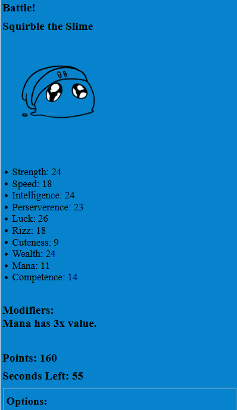

Before you begin, here are some things you should know:
- This website looks horrible because it's made by a student with minimal web programming experience.
- This is a multiple choice style game and your input is wanted as part of a school science project.
- Note that data is not needed after 19th August, 2025, but you're free to play this game.
- You should only play in an area where you can focus on the game, such as at home or sat down on a bench.
- It would be preferred for you to play the game indoors or have your high screen brightness.
- You should NOT use a calculator or other tools to help you.
- Do not reload the game page. If you do, all progress will be lost.
- At the end of the game, you will have to fill out a Google Forms survey and copy and paste text given to you (more on that at the end)
- Do not play this game if you have sensitivity to colours or related medical conditions.
- You should expect the game to take roughly 7-10 minutes, and the survey to take 2. Please don't rush through it.
- Find inquiries here.
- Google form here.
How to play the game:
The rules are simple: You are presented with an enemy, who has 10 different characteristics (stats). You have 60 seconds to make a choice.
You must choose the best option out of 10 available characters.
To determine the best option, simply add up all the stats of a character. You must account for any modifiers if present.
If your chosen character has more stats than the enemy, you gain points. Less, and you lose points.
If you go over 60 seconds when making your choice, you will go into overtime, but lose extra points on top of your result.
Once you finish a round, there will be a 4 second intermission, allowing you to take a small break.
Aim to have as many points as possible! The example UI is shown below. The game will start as soon as you click the link.
Click this to begin!
